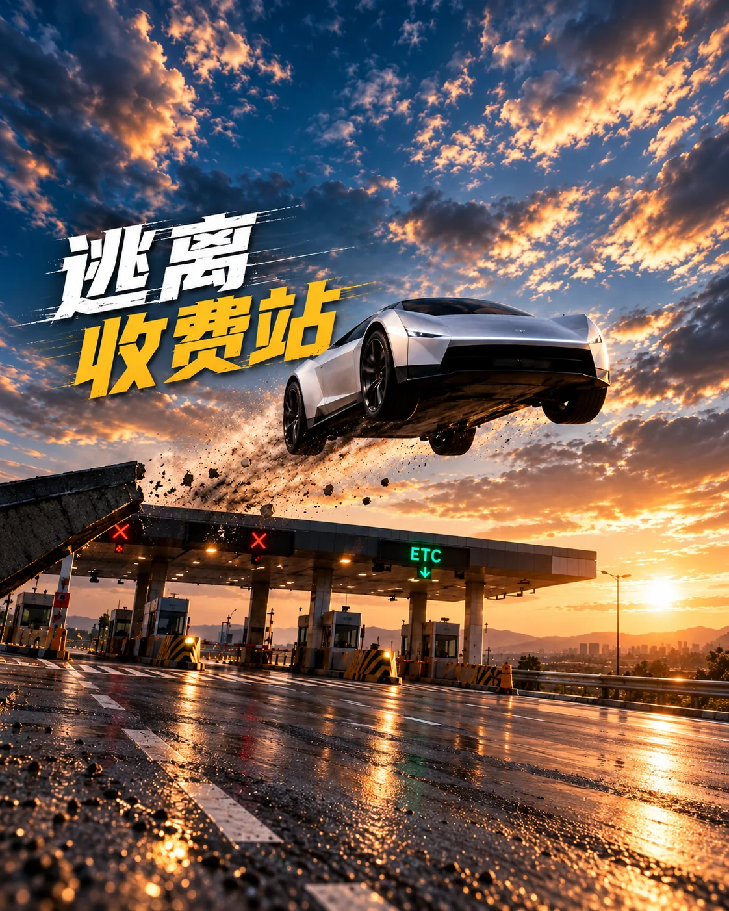

本次得分 RUN SCORE
0
飞越收费站 0 座 · 最高 0
下一个收费站
--- m
长按 空格 / 点击屏幕 点火起飞
热身路段完整飞越才补气 · 绕行更省气
← → / A D 切换车道

ROADSTER公路之上，自由起飞。
冷气推进器已就绪
下一站，
直接飞越。
三条车道，一罐冷气。
越过车流，飞过下一座收费站。
空格长按起飞 · 松开下降也可按住鼠标或屏幕空白处
看准路面的蓝色光带，提前点火
飞越奖励与进阶操作 ＋
- 完整飞越车辆才补气：贴顶 +10%、普通 +7%、高空 +4%、横排 +12%。绕行更省气，满罐可持续点火 5 秒。
- 飞过收费站基础 +100 分；贴顶飞越车辆 +60 分，普通 +40，高空 +25，横排 +150。
- 横滚基础 +80 分，连续横滚有加成；也可用 Shift、鼠标右键或屏幕「翻转」按钮。
- 过站后及时松手，高度超过 34 m 会失控。按 M 静音。
行程结束RUN COMPLETE
撞上收费站
本地排行榜
保存在本机浏览器 · 最多 10 条
还没有记录 —— 飞一次就上榜
按 空格 或 R 快速重开